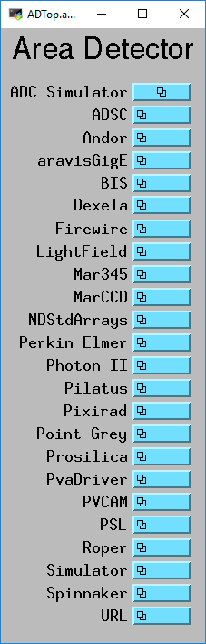
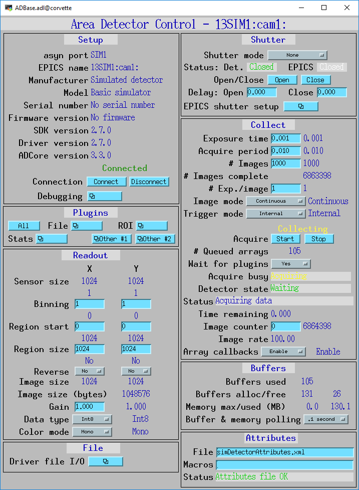
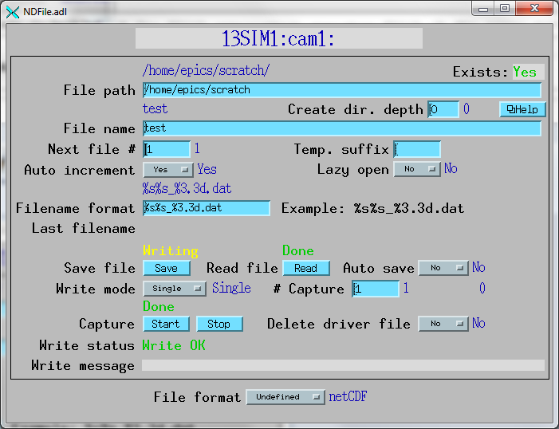
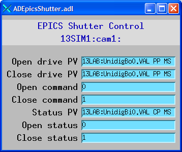

MEDM screens
The following is the top-level MEDM screen that provides links to the screens for most of the detectors and plugins that areaDetector supports. This screen is useful for testing, and as a source for copying related-display menus to be placed in application-specific MEDM screens.
{kind=link}
The following is the MEDM screen that provides access to the parameters in asynNDArrayDriver.h and ADDriver.h through records in ADBase.template. This is a top-level MEDM screen that will work with any areaDetector driver. Note however that many drivers will not implement all of these parameters, and there will usually be detector-specific parameters not shown in this screen, so detector-specific MEDM screens should generally be created that display the EPICS PVs for the features implemented for that detector.
{kind=link}
The following is the MEDM screen that provides access to the file-related parameters in asynNDArrayDriver.h through records in NDFile.template. This screen is for use with detector drivers that directly implement file I/O.
{kind=link}
The following is the MEDM screen that provides access to the EPICS shutter parameters in ADDriver.h through records in ADBase.template. This screen allows one to define the EPICS PVs to open the shutter, close the shutter, and determine the shutter status. The values of these PVs for open and close drive and status can also be defined. Note that in many cases the same PV will be used for open and close drive, but in some cases (e.g. APS safety shutters) different PVs are used for open and close.
{kind=link}